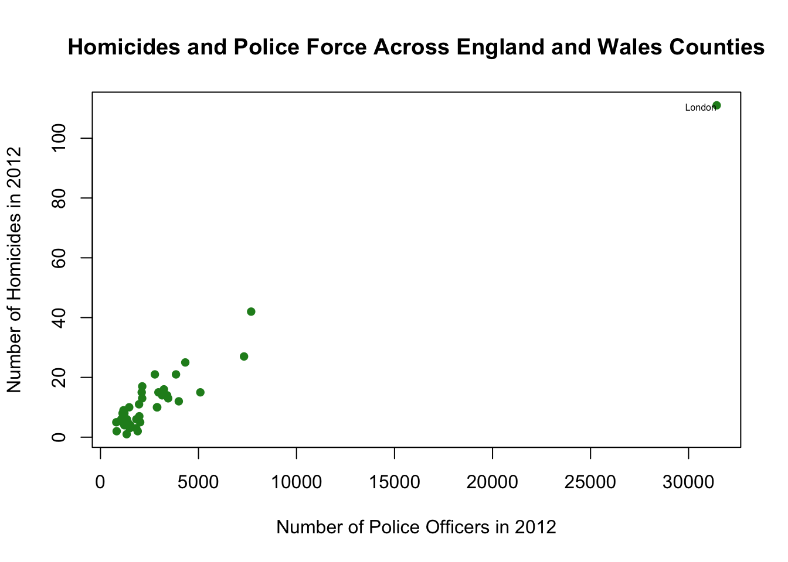
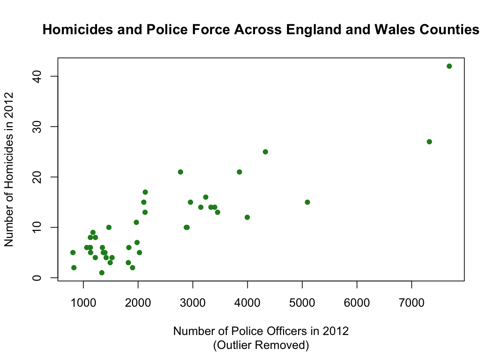
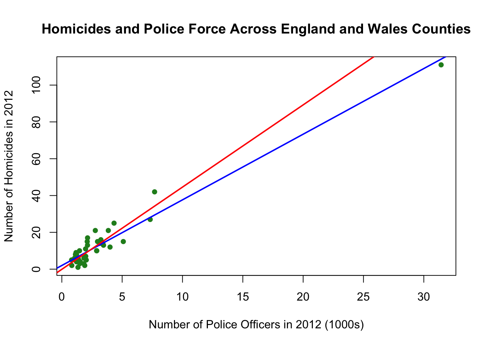

# load the required package(s)
library(stargazer)
# create a data frame
mydata1=read.csv(file="tute5_height.csv")Part A
Getting Started
Please create a Tutorial5 folder on your computer, and then go to the LMS site for ECOM20001 and download the following files into the Tutorial5 folder:
tute5.R
tute5_height.csv
tute5_crime.csv
The first file is the R code for tutorial 5, the second two files are the .csv files that contain two separate data sets for the tutorial.
The first (micro) data set, tute5_height.csv, has the following 6 variables:
| id | worker identifier |
| earnings | annual labour earnings in $10,000’a (in real terms, 2012=100) |
| height | height without shoes in centimeters |
| weight | weight without shoes in centimeters |
| male | binary variable that equals 1 if the worker is male; 0 otherwise |
| age | age of the worker at the time of the survey |
In total, the data set contains this information for n=17,870 U.S. workers.
The first dataset is the same as the one we used in Tutorial 4, with one important difference that we discuss below. Recall this dataset is from Case, Anne and Christina Paxon (2008): “Stature and Status: Height, Ability, and Labor Market Outcomes,” Journal of Political Economy, 116(3), pp. 499-532.
The second (county-level) data set from England and Wales,2 tute5_crime.csv , has the following 3 variables:
| county | county name |
| police | number of police officers in 2012 |
| homicides | number of homicides in 2012 |
This dataset is from Machin, Stephen and Olivier Beck (2011): “Crime and Police Resources: The Street Crime Initiative,” Journal of the European Economic Association,9(4), pp. 678-701.
Part B
Having worked through the tute5.R code and graphs please answer the following questions.
Part C
Earnings and Height
Q1
Estimate the following single linear regression model for worker \(i\):
\[ Earnings_i = \beta_0+\beta_1\, Height_i + u_i\]
Present the regression results, including discussion of statistical significance of the OLS regression estimate against a null of no relationship between earnings and height, for the change in earnings associated with a one-unit change in height.
Also present the 95% confidence interval for the relationship between earnings and a one-unit change in height.
Solution
## Regression of earnings on height
earn_reg1=lm(earnings~height,data=mydata1) # run the single linear regression
summary(earn_reg1) # summarize the regression results
Call:
lm(formula = earnings ~ height, data = mydata1)
Residuals:
Min 1Q Median 3Q Max
-4.7972 -2.1909 -0.7923 3.4421 5.0579
Coefficients:
Estimate Std. Error t value Pr(>|t|)
(Intercept) -0.051174 0.338050 -0.151 0.88
height 0.027859 0.001984 14.042 <2e-16 ***
---
Signif. codes: 0 '***' 0.001 '**' 0.01 '*' 0.05 '.' 0.1 ' ' 1
Residual standard error: 2.678 on 17868 degrees of freedom
Multiple R-squared: 0.01092, Adjusted R-squared: 0.01086
F-statistic: 197.2 on 1 and 17868 DF, p-value: < 2.2e-16\[\begin{align*} \widehat{Earnings} & = \underset{(0.338)}{-0.051}+ \underset{(0.002)}{0.028} \,height \, \underset{\qquad(s.e)}{}\\ & R^2=0.011 \qquad SER=2.678 \end{align*}\]
Increasing height by 1cm has a corresponding increase in annual earnings of $1 x $10000 x 0.028 = $280.
## 95% CI for the OLS slope coefficient on height from earn_reg1 regression
confint(earn_reg1, 'height', level=0.95) 2.5 % 97.5 %
height 0.02397003 0.03174726The 95% confidence interval (CI) is [0.024,0.032] so we fail to reject estimated relationships as small as $240 annually and as large as $320 annually at the 5% level of significance.
Note
the summary() command for summarising the results from a regression assumes homoskedastic standard errors. For tutorial 5, we will work with homoeskedastic standard errors as we introduce inference with single linear regression. Next week, in tutorial 6, we will extend our code to properly account for heteroskedastic standard errors. From that point on, all of our tutorials and assignments (2 & 3) will work with heteroskedastic standard errors, as discussed at the end of Lecture Note 5.
Q2
Present the regression results, including discussion of statistical significance of the OLS regression estimate against a null of no relationship between earnings and height, for the change in earnings associated with a 100 cm change in height.
Also present the 95% confidence interval for the relationship between earnings and a 100 cm change in height.
Solution
Increasing height by 100 cm yields a 0.028 x 100 cm x $10000 = $28000 increase in annual earnings.
To obtain the confidence interval (“manually” in R)
## Obtain regression coefficients from earn_reg1 regression
beta=coef(summary(earn_reg1))[, "Estimate"]
# beta[1] is OLS estimate of intercept
# beta[2] is OLS estimate of slope
## Obtain standard errors from coefficients earn_reg1 regression
se=coef(summary(earn_reg1))[, "Std. Error"]
# se[1] is standard error of OLS estimate of intercept
# se[2] is standard error of OLS estimate of slope
## 95% CI for increasing height by 100cm on earnings
CI95_low_100=100*(beta[2]-1.96*se[2]) # lower bound of 95% CI
CI95_upp_100=100*(beta[2]+1.96*se[2]) # upper bound of 95% CI
paste("95% CI lower bound for 100cm increase in earnings is: ", CI95_low_100)[1] "95% CI lower bound for 100cm increase in earnings is: 2.39702224050023"paste("95% CI upper bound for 100cm increase in earnings is: ", CI95_upp_100)[1] "95% CI upper bound for 100cm increase in earnings is: 3.1747070103621"The 95% CI in terms of annual earnings is [$24000,$32000].
Q3
Present the regression results, including discussion of statistical significance of the OLS regression estimate against a null that a 10 cm increase in height has an associated $3000 increase in annual earnings.
Solution
Run the following R code chunks:
## t-statistic and p-value for null that slope=0.03
tstat2=(beta[2]-0.03)/se[2]
tstat2 height
-1.079371 pval2=2*pnorm(-abs(tstat2))
paste("pvalue for 2-sided test of null that slope=0.03 is:", pval2)[1] "pvalue for 2-sided test of null that slope=0.03 is: 0.280422212649672"# Fail to reject null, p-value (pval2)=0.280
Tip
This is where it is important to take note of the units used to measure variables
Recall that earnings are measured in $10,000’s and height in centimetres so the null hypothesis is \(H_0: \beta_1=0.03\) vs. \(H_A: \beta_1 \neq0.03\)
Using R we have
## t-statistic and p-value for null that slope=0.03
tstat2=(beta[2]-0.03)/se[2]
tstat2 height
-1.079371 pval2=2*pnorm(-abs(tstat2))
paste("pvalue for 2-sided test of null that slope=0.03 is:", pval2)[1] "pvalue for 2-sided test of null that slope=0.03 is: 0.280422212649672"# Fail to reject null, p-value (pval2)=0.280The t-statistic for testing a null equal to $3000 increase in annual earnings for a 10cm increase in height the same as a 1cm increase in height having a $300 increase in earnings.
Hence the t-statistic for the test is t=(0.028-0.03) / 0.002 = -1.08 which has an associated p-value of 2 x Phi(-|-1.08|) = 0.280, where Phi( ) \(\left[ \Phi \right]\)is the CDF of the N(0,1) distribution.
So fail to reject the null of a $3000 increase in annual earnings from a 10 cm increase in height at the 5% level of significance.
Homicides and Police
Q1
Present a scatter plot with police on the horizontal axis and homicides on the vertical axis. What relationship do you see?
Solution
# create a data frame
mydata2=read.csv(file="tute5_crime.csv")First, let’s look at the sunmmary statistics for this data set.
## Summary Statistics including the 25th and 75th percentile
stargazer(mydata2,
summary.stat = c("n", "mean", "sd", "median", "p25","p75","min", "max"),
type="text", title="Descriptive Statistics",
out="sumstats2.txt")
Descriptive Statistics
====================================================================
Statistic N Mean St. Dev. Median Pctl(25) Pctl(75) Min Max
--------------------------------------------------------------------
police 43 3,065.953 4,690.181 1,968 1,342.5 3,191 809 31,435
homicides 43 12.930 17.238 9 5 14.5 1 111
--------------------------------------------------------------------So a typical county had 3066 police offices and 13 homicides in 2012. The range is considerable: the minimum number of police and homicides in a county is 809 and 1 respectively. The maximum number of police and homicides in a county is 31435 and 111 (!)
The interquartile range (75th - 25th percentiles) is quite wide for both homicides and police , 9.5 and 18948.5 respectively.
Next, the scatter plot between homicides and police:
plot(mydata2$police,mydata2$homicides,
main="Homicides and Police Force Across England and Wales Counties",
xlab="Number of Police Officers in 2012",
ylab="Number of Homicides in 2012",
col="forestgreen",
pch=16)A positive relationship.
This is somewhat surprising (to me at least) because I would have initially thought more police means less crime/homicides.
Q2
Using the scatter plot, examine whether there are any potential outliers.
If there are, discuss which data point(s) appear to be outliers and why they may be outliers.
Produce a second scatter plot with the outliers removed.
Solution

Additional line in the usual plot command to label London (note there are a lot of ways to label points in plots however they require installing and loading different packages; this is one way to label points using base R.
plot(mydata2$police,mydata2$homicides,
main="Homicides and Police Force Across England and Wales Counties",
xlab="Number of Police Officers in 2012",
ylab="Number of Homicides in 2012",
col="forestgreen",
pch=16)
text(x=32000,y=110,labels = "London", pos=2,cex=0.5)“Metropolitan Police” is the data point in the top right corner of the graph with more than 100 homicides a year, which is a potential outlier. It’s a potential outlier because it corresponds to London, which is substantially larger than all other markets in the UK.

Scatter plot command without labels
plot(mydata2$police[mydata2$homicides<100],mydata2$homicides[mydata2$homicides<100],
main="Homicides and Police Force Across England and Wales Counties",
sub="(Outlier Removed)",
xlab="Number of Police Officers in 2012",
ylab="Number of Homicides in 2012",
col="forestgreen",
pch=16)The second scatter plot with this potential outlier removed shows a similar positive relationship, but the scale of the axes are no longer stretched out by the potential outlier.
Q3
Estimate the following single linear regression model for county \(i\):
\[ Homicides_i = \beta_0+\beta_1\, Police_i+u_i \]
Present the regression results, including discussion of statistical significance of the OLS estimate against a null of no relationship between homicides and police, for the change in homicides associated with a one-unit change in police.
Also present the 95% confidence interval for the relationship between homicides and a one-unit change in police.
Does the OLS regression coefficient estimate and 95% CI have an easy or difficult numerical interpretation?
Solution
## Single Linear Regression of Homicides and Police with 95% Confidence Interval
crime_reg1=lm(homicides~police, data=mydata2)
summary(crime_reg1)
Call:
lm(formula = homicides ~ police, data = mydata2)
Residuals:
Min 1Q Median 3Q Max
-6.7686 -2.7359 -0.8036 2.2218 12.5901
Coefficients:
Estimate Std. Error t value Pr(>|t|)
(Intercept) 1.9963839 0.7718408 2.587 0.0133 *
police 0.0035662 0.0001389 25.678 <2e-16 ***
---
Signif. codes: 0 '***' 0.001 '**' 0.01 '*' 0.05 '.' 0.1 ' ' 1
Residual standard error: 4.221 on 41 degrees of freedom
Multiple R-squared: 0.9415, Adjusted R-squared: 0.94
F-statistic: 659.4 on 1 and 41 DF, p-value: < 2.2e-16\[\begin{align*} \widehat{Homicides}_i & = 1.9963 + 0.0036 \, Police_i, \qquad R^2=0.942, \, SER=4.221 \\ & \quad (0.7718) \quad (0.0001) \end{align*}\]
the p-value on the police coefficient less than 0.000001, so reject the null that there is no relationship between homicides and police.
confint(crime_reg1, 'police', level=0.95) 2.5 % 97.5 %
police 0.003285738 0.003846692The 95% CI for the coefficient on police is [0.0033, 0.0038].
Interpreting the results, we find that adding one more police officer (e.g. a one unit change) is associated with a 0.0036 increase in homicides in a county.
It is a bit difficult to interpret this result since the scale of the police variable is in the 1000s so adding just one police officer seems like a minuscule change.
The other issue is we have had to keep four digits past the decimal in our regression results to maintain some degree of accuracy in the results.
This is not preferred because there’s too many digits relative to what’s needed for interpreting the magnitudes of the effects of interest.
It would be preferred to have two or three digits past the decimal and no more. We need to rescale the variable to fix this issue.
Q4
Rescale police from the raw data to being in terms of 1000s of police in a county. Using this rescaled variable, present a new set of regression results, including discussion of statistical significance of the OLS regression estimate against a null of no relationship between homicides and police, for the change in homicides associated with a one-unit change in the rescaled police variable.
Also present the 95% confidence interval for the relationship between homicides and a one-unit change in the re-scaled police variable.
Does the OLS regression coefficient estimate and 95% CI have an easier numerical interpretation than the interpretation in Q3 above?
Solution
First rescale the police variable:
mydata2$police_1000=mydata2$police/1000
summary(mydata2) county police homicides police_1000
Length:43 Min. : 809 Min. : 1.00 Min. : 0.809
Class :character 1st Qu.: 1342 1st Qu.: 5.00 1st Qu.: 1.343
Mode :character Median : 1968 Median : 9.00 Median : 1.968
Mean : 3066 Mean : 12.93 Mean : 3.066
3rd Qu.: 3191 3rd Qu.: 14.50 3rd Qu.: 3.191
Max. :31435 Max. :111.00 Max. :31.435 Notice how with the summary statistics police_1000 now shows up with a mean of 3.066 (which means 3066 police on average) which has a similar scale as the mean of homicides in the sample of 12.93.
Then re-estimate the model using the rescaled police variable.
crime_reg2=lm(homicides~police_1000, data=mydata2)
summary(crime_reg2)
Call:
lm(formula = homicides ~ police_1000, data = mydata2)
Residuals:
Min 1Q Median 3Q Max
-6.7686 -2.7359 -0.8036 2.2218 12.5901
Coefficients:
Estimate Std. Error t value Pr(>|t|)
(Intercept) 1.9964 0.7718 2.587 0.0133 *
police_1000 3.5662 0.1389 25.678 <2e-16 ***
---
Signif. codes: 0 '***' 0.001 '**' 0.01 '*' 0.05 '.' 0.1 ' ' 1
Residual standard error: 4.221 on 41 degrees of freedom
Multiple R-squared: 0.9415, Adjusted R-squared: 0.94
F-statistic: 659.4 on 1 and 41 DF, p-value: < 2.2e-16confint(crime_reg2, 'police_1000', level=0.95) 2.5 % 97.5 %
police_1000 3.285738 3.846692The results after rescaling the police variable are:
\[\begin{align*} \widehat{Homicides}_i & = 1.9963 + 3.566 \, Police_i, \qquad R^2=0.942, \, SER=4.221 \\ & \quad (0.7718) \quad (0.139) \end{align*}\]
The p-value on the police coefficient unchanged at less than 0.000001, so reject the null that there is no relationship between homicides and police. (note that the t-statistics and p-values are the same as those using the unscaled police variable and the R-squared also has not changed)
Interpretation now is an increase of police by 1000 has an associated increase of 3.566 homicides.
The 95% CI is [3.286,3.847].
We no longer have to stretch the significant digits for accuracy;in fact the re-scaled results are more accurate than the unscaled ones. Much cleaner and more relevant/clearer interpretation of results given the magnitude of the police variable in the raw data.
In passing, here are the results keeping only two digits after the decimal. This is even cleaner in terms of presentation and interpretation without giving up anything in terms of relevant level of accuracy:
\[\begin{align*} \widehat{Homicides}_i & = 2.00 + 3.57 \, Police_i, \qquad R^2=0.94, \, SER=4.22 \\ & \, \quad (0.77) \quad (0.14) \end{align*}\]
Q5
Continuing to use the rescaled police variable, present a separate set of OLS regression results that omit any potential outliers you found in Q2 above.
Present the a new set of regression results, including discussion of statistical significance of the OLS estimate against a null of no relationship between homicides and police, for the change in homicides associated with a one-unit change in the rescaled police variable.
Also present the 95% confidence interval for the relationship between earnings and a one-unit change in the re-scaled police variable.
Compare the results in Q4 and Q5 and comment on the impact of any outliers on the regression results. Do you think the potential outliers should be omitted from the analysis?
Present a scatter plot using the homicides and rescaled police variables as well as the estimated regression lines in Q4 and Q5 to visually highlight the impact of outliers on the regression results.
Solution
## Regression results without potential outlier
crime_reg3=lm(homicides[homicides<100]~police_1000[homicides<100], data=mydata2)
summary(crime_reg3)
Call:
lm(formula = homicides[homicides < 100] ~ police_1000[homicides <
100], data = mydata2)
Residuals:
Min 1Q Median 3Q Max
-7.677 -2.629 -0.385 2.548 8.687
Coefficients:
Estimate Std. Error t value Pr(>|t|)
(Intercept) -0.08363 1.13803 -0.073 0.942
police_1000[homicides < 100] 4.46721 0.40001 11.168 7.27e-14 ***
---
Signif. codes: 0 '***' 0.001 '**' 0.01 '*' 0.05 '.' 0.1 ' ' 1
Residual standard error: 3.999 on 40 degrees of freedom
Multiple R-squared: 0.7572, Adjusted R-squared: 0.7511
F-statistic: 124.7 on 1 and 40 DF, p-value: 7.272e-14confint(crime_reg3, 'police_1000[homicides < 100]', level=0.95) 2.5 % 97.5 %
police_1000[homicides < 100] 3.658761 5.275659Estimation results using the rescaled police variable and with the outlier removed :
\[\begin{align*} \widehat{Homicides}_i & = -0.08 + 4.48 \, Police_i, \qquad R^2=0.76, \, SER=4.00 \\ & \qquad (1.14) \quad (0.40) \end{align*}\]
There is a large increase in the coefficient on police. It increases from 3.57 to 4.48, which is a 100 x (4.48-3.57) / 3.57 = 25% increase. The coefficient has a p-value less than 0.000001 so is still statistically significant at conventional levels of significance.
Interpretation now is an increase of police by 1000 has an associated increase of 4.48 homicides.
The 95% CI is [3.66,5.28].
The large change in the slope coefficient estimate strongly suggests that the outlier should be removed.
Notice in passing how the standard error on the policy coefficient rises substantially, from 0.14 to 0.40, which is a near tripling of the standard error magnitude. Why does this occur?
Because when we drop the outlier, we get a substantial decrease in the variance of our independent variable, which recall from the class notes is inversely related to the standard error of the OLS regression slope estimate.
The scatter plot below highlights the differences in the results with and without the outlier using the rescaled police variable. IT clearly shows how the outlier “drags down” the OLS slope coefficient estimate.
plot(mydata2$police_1000,mydata2$homicides,
main="Homicides and Police Force Across England and Wales Counties",
xlab="Number of Police Officers in 2012 (1000s)",
ylab="Number of Homicides in 2012",
col="forestgreen",
pch=16)
abline(crime_reg2, col="blue", lwd=2)
abline(crime_reg3, col="red", lwd=2)
The following code presents both estimation results in one table usingstargazer. In order to obtain this table, we have re-run the second (rescaled) model using the subset command first to create a data frame excluding Metropolitan Police then use this data frame to estimate this model. Also note, the use of the column.labels=c() option in stargazer to name both models and also the covariate.label=c() option to relabel the intercept and X variable (in this case “Intercept” and Police per 1000” respectively).
## report the results of estimating the rescaled data
## with and without the outlier in stargazer
## to make this easier re-estimate the models
## using a new dataframe excluding Metro police
mydata3 <- subset(mydata2,homicides<100 )
## then rereun crime-reg3
crimereg3a <- lm(homicides~police_1000, data=mydata3)
# then run stargazer (note a few option changes)
stargazer(crime_reg2,crimereg3a ,type="text",
column.labels = c("inc. Metro", "exc. Metro"),
covariate.labels=c("Intercept","Police per 1000"),
digits=4, align=TRUE,
intercept.bottom=FALSE)
=====================================================================
Dependent variable:
-------------------------------------------------
homicides
inc. Metro exc. Metro
(1) (2)
---------------------------------------------------------------------
Intercept 1.9964** -0.0836
(0.7718) (1.1380)
Police per 1000 3.5662*** 4.4672***
(0.1389) (0.4000)
---------------------------------------------------------------------
Observations 43 42
R2 0.9415 0.7572
Adjusted R2 0.9400 0.7511
Residual Std. Error 4.2214 (df = 41) 3.9989 (df = 40)
F Statistic 659.3641*** (df = 1; 41) 124.7190*** (df = 1; 40)
=====================================================================
Note: *p<0.1; **p<0.05; ***p<0.01Q6
Finally, provide an economic explanation for the relationship between the number of homicides and the number of police in a county in 2012.
Did you originally find the scatter plot surprising? Why or why not?
Provide an economic explanation for why you might find a positive relationship between the number of homicides and the number of police.
Provide a separate economic explanation for why you might find a negative relationship between the number of homicides and the number of police.
Given your economic explanations for a positive and negative relationship, can you plausibly interpret your OLS estimates of the relationship between homicides and the number of police in Q4 and Q5 above as being “causal”? That is, can you interpret the estimated relationship as the causal impact of increasing the the number of police on the number of homicides?
If you think the OLS estimate of the relationship is causal explain why
If you do not think the OLS estimate of the relationship is causal, briefly describe an experiment that could be used to estimate the causal impact of increasing the number of police on the crime rate in a county. What would you expect the sign of the OLS estimate of the empirical relationship between the number of homicides and number of police with such experimental data to be?
Solution
I found the scatter plot surprising originally because I focused on the impact of police presence on homicides, which I thought would be negative not positive.
But we could find a positive relationship if the government actively puts more police officers in areas that tend to have higher crime rates. That is, all else equal, higher crime areas would attract more police officers if governments actively targeted the police force to be in high violence/homicide areas to maximise the public benefit from having police officers around.
Alternatively, it could be that putting more police officers in an area reduces the homicides since having more police around increases the chances of getting caught and prosecuted as a suspect, and hence increases the cost of engaging in crime, or in the extreme, homicide.
The OLS estimates cannot be interpreted as causal since you cannot disentangle the “government targeting” and “homicide reducing” influences on the correlation between homicides and police officers. There may be even more explanations that we cannot disentangle out, but having just two is enough to undermine a causal interpretation of our OLS estimates in Q4 and Q5. That is, the OLS estimates reflect a mix of the“government targeting” and “homicide reducing” influences on the correlation between homicides and police officers which work in opposite directions. The fact that the correlation is positive suggests that the “government targeting” force dominates the “homicide reducing”, but there is no way to figure out how large these two forces are empirically (yet!).
An experiment would see you randomly put police officers in some counties and randomly withhold police officers in other counties, and then track the relative homicide rates over time. We would expect at least a negative relationship if having police officers around were a good deterrent for homicides. So we would expect the OLS estimate from a regression using the experimental data relating homicides and police officer counts to be negative.